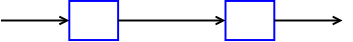
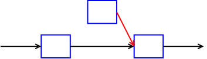
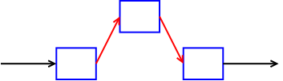
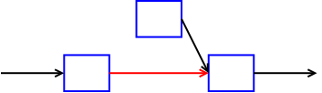
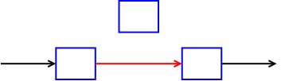

Scalability techniques
Memory barriers
Paul McKenney started with a discussion of memory barriers — processor instructions used to ensure that memory operations are carried out in a specific order. Normally, Paul said, memory barriers cannot be used by themselves; instead, they must be used in pairs. So, for example, a typical memory barrier usage would follow a scheme like this:
- The writer side fills a structure with interesting data, then sets a
flag to indicate that the structure's contents are valid. It is
important that no other processor see the "valid" flag as being set
until the structure changes are visible there. To make that happen,
the writer process will execute a write memory barrier between filling
the structure and setting the flag.
- The reader process knows that, once it sees the flag set, the contents of the structure are valid. But that only works if the instructions reading the flag and the structure are not reordered within the processor. To ensure that, a read barrier is placed between the reading of the flag and subsequent operations.
Paul noted that memory barriers can be expensive; might there be something cheaper? That may not be possible in an absolute sense, but there is a mechanism by which the cost can be shifted to one side of the operation: read-copy-update (RCU). RCU splits time into "grace periods"; any critical section that begins before the start of a grace period is guaranteed to have completed by the end of that grace period. Code that is concerned with concurrency can use RCU's synchronization calls to wait for a grace period to complete in the knowledge that all changes done within that grace period will be globally visible at the end.
Doing things in this way shifts the entire cost to the side making the synchronization call, which is sufficient in many situations. For the cases where it is not, one can use RCU callbacks, but that leads to some other interesting situations. But that was the subject of the next talk.
RCU-correct data structures
Josh Triplett took over to try to make the task of creating data structures that function properly with RCU a less-tricky task. The mental model for ordinary locking, he said, is relatively easy for most developers to understand. RCU is harder, with the result that most RCU-protected data structures are "cargo-culted." If the data structure looks something like a linked list, he said, it's pretty easy to figure out what is going on. Otherwise, the process is harder; he described it as "construct an ordering scenario where things go wrong, add a barrier to fix it, repeat, go insane."
There is a simpler way, he said. Developers should forget about trying to get a handle on overlapping operations, possible reordering of operations, etc., and just assume that a reader can run atomically between every pair of writes. That leads to a pair of relatively straightforward rules:
- On the reader side: rcu_dereference() should be used for
pointer traversal, smp_rmb() should be used to place barriers
between independent reads, and the entire critical section should be
enclosed within an RCU read lock.
- For writers, there are two possibilities. If writes are done in the same order that readers will read the data, then synchronize_rcu() should be used between writes. If they are done in the opposite order, use smp_wmb() or rcu_assign_pointer() to insert a write memory barrier. There is no need for an expensive synchronize call in this case.
Those two rules, Josh contends, are all that is ever needed to create safe data structures protected by RCU.
Josh walked the group through a simple linked-list example. Supposed you have a simple linked list that looks like this:

If you want to insert an item into the list without taking any locks, you would start by setting the "next" pointer within the new item like this:

Once that is done, the list itself can be modified to include the new item:

Any code traversing the list concurrently will either see the new item or it will not, but it will always see a correct list and not go off into the weeds — as long as the two pointer assignments described above are visible in the correct order. To ensure that, one should apply Josh's rules. Since these pointer assignments are done in the opposite order that a reader will use to traverse the list, all that is needed is a memory barrier between the writes and all will be well.
Removing an item from the list reverses the above process. First, the list is modified to route around the item to be taken out:

Once it's sure that no threads are using the to-be-removed item, it's "next" link can be cleared:

...and the item itself can be freed. In this case, the writes are happening in the same order that the reader would use. So it is necessary to use synchronize_rcu() between the two steps to guarantee that the doomed item is truly no longer in use before freeing it. It is also possible, of course, to just use call_rcu() to complete the job and free the item asynchronously after the end of the grace period.
Lock elision
Andi Kleen talked for a while about the use of transactional memory to eliminate the taking of locks in many situations; Andi described this technique in some detail in an LWN article last January. Lock elision, he said, is much simpler to work with than RCU and, if the conditions are right, it can also be faster.
Transactional memory, he said, is functionally the same as having an independent lock on each cache line in memory. It is based on speculative execution within CPUs, something that they have been doing for years; transactional memory just makes that speculation visible. This feature is rolling out on Intel processors now; it will be available throughout the server space within a year. There are a lot of potential uses for transactional memory, but he's restricting his work to lock elision in order to keep the existing kernel programming models.
With regard to which locks should be elided, Andi said that he prefers to just enable it for everything. It can be hard to predict which locks will elide well when the kernel runs. Ben Herrenschmidt complained that in some cases prediction is easy: overly large critical sections will always abort, forcing a fallback to regular locking. Memory-mapped I/O operations will also kill things.
Will Deacon asked whether the lock-elision code took any steps to ensure fairness among lock users. Andi replied that there is no need; lock elision only happens if there is no contention (and, thus, no fairness issue) for the lock. Otherwise things fall back to the regular locking code, which can implement fairness in the usual ways.
Linus said that, sometimes, lock elision can be slower than just taking the lock, but Andi disagreed. The only time when elision would be slower is if the transaction aborts and, in that case, there's contention and somebody would have blocked anyway. Linus pointed out that Intel still has not posted any performance numbers for lock elision within the kernel; he assumes that means that the numbers are bad. Andi did not address the lack of numbers directly, but he did say that elision allows developers to go back to coarser, faster locking.
He concluded by suggesting that, rather than add a bunch of hairy scalability code to the kernel, it might be better to wait a year and just use lock elision.
SRCU
The final talk of the scalability session was given by Lai Jaingshan, who discussed the "sleepable" variant of the RCU mechanism. Normally, RCU critical sections run in atomic context and cannot sleep, but there are cases where a reader needs to block while holding an RCU read lock. There are also, evidently, situations where a separate RCU domain is useful, or when code is running on an offline CPU that does not take part in the grace period mechanism.
SRCU was introduced in 2006; Paul McKenney documented it on LWN at that time. It turned out to be too slow, however, requiring a lot of expensive calls and a per-CPU counter wait for every critical section. So SRCU was reworked in 2012 by Paul and Lai. Updates can happen much more quickly now, with no synchronization calls required; it also has a new call_srcu() primitive.
There are about sixty users of SRCU in the 3.11 kernel, the biggest of which is the KVM hypervisor code. Lai provided an overview of the SRCU API, but it went quickly and it's doubtful that many in the audience picked up much of it. Consulting the code and the documentation in the kernel tree would be the best way to start working with the SRCU mechanism.
[Next: Device tree bindings]
| Index entries for this article | |
|---|---|
| Kernel | Lock elision |
| Kernel | Memory barriers |
| Kernel | Read-copy-update |
| Kernel | Scalability |
| Kernel | Transactional memory |
| Conference | Kernel Summit/2013 |
Posted Oct 30, 2013 18:33 UTC (Wed)
by nix (subscriber, #2304)
[Link] (3 responses)
Intel might like things to work that way, but, uh, they don't.
Posted Oct 30, 2013 18:41 UTC (Wed)
by corbet (editor, #1)
[Link] (1 responses)
Posted Oct 30, 2013 19:20 UTC (Wed)
by nix (subscriber, #2304)
[Link]
Posted Nov 1, 2013 11:39 UTC (Fri)
by robert_s (subscriber, #42402)
[Link]
In particular because, apart from some high-end Power machines, Intel are the only ones with processors on the market (or even on an announced roadmap) supporting these features.
All of a sudden Intel processors would be the only ones with acceptable scalability.
Posted Nov 8, 2013 0:07 UTC (Fri)
by BenHutchings (subscriber, #37955)
[Link]
Scalability techniques
He concluded by suggesting that, rather than add a bunch of hairy scalability code to the kernel, it might be better to wait a year and just use lock elision.
It seems optimistic to assume that everyone experiencing scalability problems will upgrade their (often huge, expensive) systems on an annual basis, in the teeth of a recession!
Yes but...most scalability work is aimed at the next generation of systems anyway, so it's not quite as tone-deaf as one might think.
Scalability techniques
Scalability techniques
Scalability techniques
Hardware lock elision